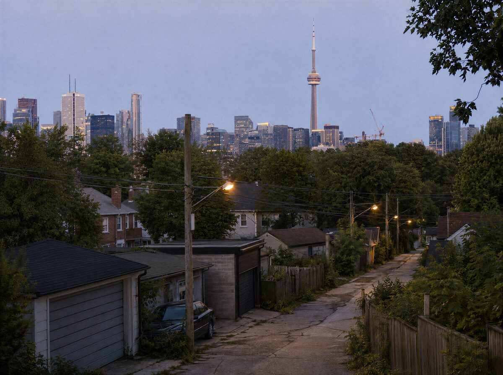

Casting a young lead.
The child we're looking for
Five or six, playing four. Takes direction. Fine around strangers. Good at pretending.
That's the whole list. No acting experience needed.
Short days across summer 2027. A crew of two or three. You there the whole time.
Nobody is asking a four-year-old to carry a scene.
We shoot 35mm stills with a small handheld camera. No film, no video, no sound.
There's an honorarium. The amount rides on funding.
Sounds like your family? Say hi.
Say hi
What happens
Parker is four. He doesn't do what anyone expects — not at daycare, not at the doctor, not at home.
His parents are trying everything. None of it explains their son.
Then one afternoon Parker gets on his scooter and goes.
The rest of the film goes with him. Alleys, the pool, the hill at the park, strangers. The further he gets, the more we see it his way.

How it gets made
Most of Scooterland is built out of 35mm photographs instead of filmed scenes.
The moving images get generated from those stills.
The photographs are the work too. They'll be shown as photographs.
Whether a still can really become a piece of a moving film is what we most want to find out.
Who else we need
- Cinematographer / photographerThe film is photographed, not shot.
- Composer / sound designerSound carries Parker's experience.
- EditorThe cut and the movement get decided at once.
- ProducerSmall production, real stake, ownership open.
- Nate and FloraParker's parents. Two adult leads.
Not on the list? Write anyway.
Lived any of this yourself — as a parent, as a neurodivergent person, through your work? It counts for a lot here, and it's expected to change the script.